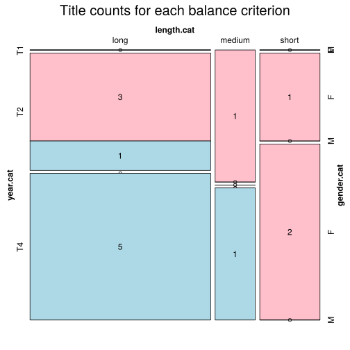

Click on a column heading to sort. Click on a text identifier to read the text (may not work in older browsers).
| Identifier | Encoding | Pages | Words | (Size) | Date (Slot) | Title | Author | Sex | Reprints |
|---|---|---|---|---|---|---|---|---|---|
| ENG18511 |
eltec-1 | 631 | 99479 | (medium) | 1851 (T1) | The Tutor’s Ward | Skene, Felicia (1821-1899) | F | low |
| ENG18611 |
eltec-0 | 946 | 250380 | (long) | 1861 (T2) | East Lynne | Wood, Ellen (1814-1887) | F | unspecified |
| ENG18620 |
eltec-1 | 199639 | (long) | 1862 (T2) | The Channings | Wood, Ellen (1814-1887) | F | unspecified | |
| ENG18631 |
eltec-1 | 222 | 48020 | (short) | 1863 (T2) | Heart and Cross | Oliphant, Margaret (1828-1897). | F | low |
| ENG18701 |
eltec-1 | 101345 | (long) | 1870 (T2) | Esther West | Craig, Isa (1831-1903) | F | low | |
| ENG18750 |
eltec-0 | 349876 | (long) | 1875 (T2) | The Way We Live Now | Trollope, Anthony (1815-1882) | M | unspecified | |
| ENG19000 |
eltec-0 | 130004 | (long) | 1900 (T4) | Lord Jim | Conrad, Joseph (1857-1924) | M | high | |
| ENG19002 |
eltec-1 | 246 | 68902 | (medium) | [1900] (T4) | The Red Chancellor | Magnay, Sir William [2nd baronet] (1855 - 1917) | M | low |
| ENG19011 |
eltec-0 | 101612 | (long) | 1901 (T4) | The purple cloud | Shiel, Matthew Phipps (1865–1947) | M | high | |
| ENG19030 |
eltec-1 | 21780 | (short) | 1903 (T4) | Penelope Brandling | Lee, Vernon [pseud. Violet Paget] (1856-1935). | F | low | |
| ENG19110 |
eltec-0 | 114360 | (long) | 1911 (T4) | Under Western Eyes | Conrad, Joseph (1857-1924) | M | high | |
| ENG19130 |
eltec-1 | 473 | 156642 | (long) | 1913 (T4) | The Way Of Ambition | Hichens, Robert (1864-1950) | M | low |
| ENG19151 |
eltec-0 | 117404 | (long) | 1915 (T4) | Victory | Conrad, Joseph (1857-1924) | M | high | |
| ENG19250 |
eltec-1 | 192 | 38815 | (short) | 1925 (T4) | “Gentlemen prefer blondes” | Anita Loos (1889–1981) | F | high |